Q01 · 6.2 / Comparing Prokaryotic and Eukaryotic Cells 正式分類
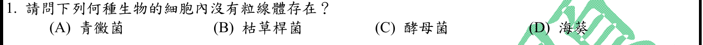
本地原卷PDF1 · 官方混科卷PDF19 · 官方原答案PDF1最下方生物表 · 已核對同年生物釋疑PDF28–29（未列本題）
官方採計：B 原答案：B
未列本輪取得的109年度釋疑PDF28–29；依同年答案採計，不宣稱沒有其他未取得公告
主分類：Ch06 A Tour of the Cell
6.2 / Comparing Prokaryotic and Eukaryotic Cells
目錄行323；條目起始印刷頁97；實際目錄 PDF36
主分類理由：6.2 / Comparing Prokaryotic and Eukaryotic Cells：以原核與真核細胞的胞器差異辨認枯草桿菌，直接屬細胞比較。
次分類理由：無另列最小次條目；逐一核對四物種的細胞類型，決定答案的共同判準是有無粒線體，6.2細胞比較最直接；不另列背景物種章。
科學說明：B。枯草桿菌為細菌，無粒線體；青黴菌、酵母菌及海葵均為真核生物。題目只需細胞構造判準，未另列真菌或動物分類條目。
來源涵蓋範圍：Campbell正文支援分類原理；原題限定、同年釋疑細節與最小目錄邊界逐題保留。
教材正文：印刷97／PDF146、印刷98／PDF147
補充來源：本題未另列課本外來源
另行比較：是否因酵母及青黴菌而分到真菌章？
逐一核對四物種的細胞類型，決定答案的共同判準是有無粒線體，6.2細胞比較最直接；不另列背景物種章。
結論：證據確認，分類疑義已解決。完整覆核紀錄
Q02 · 47.2 / Gastrulation 正式分類
本地原卷PDF1 · 官方混科卷PDF19 · 官方原答案PDF1最下方生物表 · 已核對同年生物釋疑PDF28–29（未列本題）
官方採計：D 原答案：D
未列本輪取得的109年度釋疑PDF28–29；依同年答案採計，不宣稱沒有其他未取得公告
主分類：Ch47 Animal Development
47.2 / Gastrulation
目錄行3144；條目起始印刷頁1049；實際目錄 PDF48
主分類理由：47.2 / Gastrulation：原腸是在原腸形成時建立的腔，辨認其後續命運須對照原腸形成。
次分類理由：無另列最小次條目；以教材原腸形成图文區分腔與胚層，D為腔的命運；Gastrulation比整章動物發育精確。
科學說明：D。原腸腔成為消化道管腔，內胚層構成相關上皮；不能把腔與包圍腔的胚層混為一物，亦非原有囊胚腔。
來源涵蓋範圍：Campbell正文支援分類原理；原題限定、同年釋疑細節與最小目錄邊界逐題保留。
教材正文：印刷1049／PDF1098、印刷1050／PDF1099、印刷1051／PDF1100
補充來源：本題未另列課本外來源
另行比較：原腸是內胚層還是消化道管腔？
以教材原腸形成图文區分腔與胚層，D為腔的命運；Gastrulation比整章動物發育精確。
結論：證據確認，分類疑義已解決。完整覆核紀錄
Q03 · 9.6 / The Versatility of Catabolism 正式分類
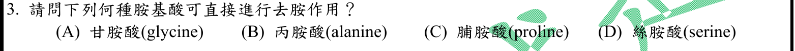
本地原卷PDF1 · 官方混科卷PDF19 · 官方原答案PDF1最下方生物表 · 同年釋疑PDF28
官方採計：D 原答案：D
109年度7/1審議會議釋疑維持原答案D
主分類：Ch09 Cellular Respiration and Fermentation
9.6 / The Versatility of Catabolism
目錄行608；條目起始印刷頁182；實際目錄 PDF37
主分類理由：9.6 / The Versatility of Catabolism：直接去胺屬胺基酸分解，教材提供去除胺基再利用碳骨架的分類框架。
次分類理由：無另列最小次條目；官方109釋疑PDF28反應圖確認serine去胺生成pyruvate，維持D；Campbell僅提供分解代謝框架，公告外Stryer全文未讀。
科學說明：D。絲胺酸經PLP相關脫水去胺形成丙酮酸與銨；官方PDF28的Stryer圖正面支持此反應並維持D。甘胺酸裂解、脯胺酸氧化及丙胺酸轉胺不可等同本題直接去胺。Campbell未細列該酵素，官方所引Stryer7e印刷708僅實讀公告內圖文，未冒稱取得該書；公告的lanine拼字照存。
來源涵蓋範圍：Campbell正文支援分類原理；原題限定、同年釋疑細節與最小目錄邊界逐題保留。
教材正文：印刷182／PDF231、印刷183／PDF232
補充來源：本題未另列課本外來源
另行比較：直接去胺是否應選alanine或甘胺酸？
官方109釋疑PDF28反應圖確認serine去胺生成pyruvate，維持D；Campbell僅提供分解代謝框架，公告外Stryer全文未讀。
結論：證據確認，分類疑義已解決。完整覆核紀錄
Q04 · 38.1 / Seed Development and Structure 正式分類
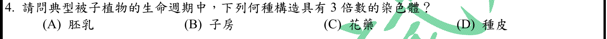
本地原卷PDF1 · 官方混科卷PDF19 · 官方原答案PDF1最下方生物表 · 已核對同年生物釋疑PDF28–29（未列本題）
官方採計：A 原答案：A
未列本輪取得的109年度釋疑PDF28–29；依同年答案採計，不宣稱沒有其他未取得公告
主分類：Ch38 Angiosperm Reproduction and Biotechnology
38.1 / Seed Development and Structure
目錄行2495；條目起始印刷頁828；實際目錄 PDF45
次分類：Ch38 Angiosperm Reproduction and Biotechnology
38.1 / The Angiosperm Life Cycle: An Overview
目錄行2486；條目起始印刷頁826；實際目錄 PDF45
主分類理由：38.1 / Seed Development and Structure：三倍體胚乳是種子發育與構造的直接考點。
次分類理由：38.1 / The Angiosperm Life Cycle: An Overview：雙重受精的生命週期圖提供兩極核加一精核的來源。
科學說明：A。典型被子植物的胚乳為3n；子房、花藥母體組織及種皮通常為2n。花藥含有單倍體花粉不代表花藥本身是3n。保留題設「典型」，不泛化到所有胚囊型。
來源涵蓋範圍：Campbell正文支援分類原理；原題限定、同年釋疑細節與最小目錄邊界逐題保留。
教材正文：印刷826／PDF875、印刷827／PDF876、印刷828／PDF877、印刷829／PDF878
補充來源：本題未另列課本外來源
另行比較：花藥內有生殖細胞是否也為3n？
重算兩極核加一精核為3n，花藥為母體器官，不因含花粉改為3n；種子發育主目及生命週期次目同章照存。
結論：證據確認，分類疑義已解決。完整覆核紀錄
Q05 · 39.5 / Defenses Against Herbivores 正式分類
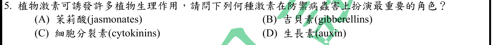
本地原卷PDF1 · 官方混科卷PDF19 · 官方原答案PDF1最下方生物表 · 已核對同年生物釋疑PDF28–29（未列本題）
官方採計：A 原答案：A
未列本輪取得的109年度釋疑PDF28–29；依同年答案採計，不宣稱沒有其他未取得公告
主分類：Ch39 Plant Responses to Internal and External Signals
39.5 / Defenses Against Herbivores
目錄行2599；條目起始印刷頁867；實際目錄 PDF45
次分類：Ch39 Plant Responses to Internal and External Signals
39.5 / Defenses Against Pathogens
目錄行2596；條目起始印刷頁866；實際目錄 PDF45
次分類：Ch39 Plant Responses to Internal and External Signals
39.2 / A Survey of Plant Hormones
目錄行2557；條目起始印刷頁847；實際目錄 PDF45
主分類理由：39.5 / Defenses Against Herbivores：以茉莉酸誘導抗食草動物防禦為主要辨認機制。
次分類理由：39.5 / Defenses Against Pathogens：題幹亦明列病害，保留抗病原體條目；39.2 / A Survey of Plant Hormones：39.2荷爾蒙總覽印刷855直接說明jasmonates防禦作用。
科學說明：A。印刷855明述茉莉酸調控對食草動物及病原體的防禦。水楊酸亦參與抗病，但不在選项中；「最重要」限此題選項，非所有病原及情境皆以茉莉酸為唯一核心。
來源涵蓋範圍：Campbell正文支援分類原理；原題限定、同年釋疑細節與最小目錄邊界逐題保留。
教材正文：印刷847／PDF896、印刷855／PDF904、印刷866／PDF915、印刷867／PDF916、印刷868／PDF917
補充來源：本題未另列課本外來源
另行比較：病害是否應只分類抗病原體或水楊酸？
印刷855明列jasmonates防禦herbivores及pathogens，三個真實條目分別承接蟲、病與激素機制；答案只在題列四者比較。
結論：證據確認，分類疑義已解決。完整覆核紀錄
Q06 · 25.4 / Plate Tectonics 正式分類
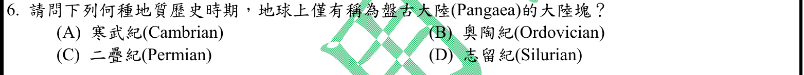
本地原卷PDF1 · 官方混科卷PDF19 · 官方原答案PDF1最下方生物表 · 已核對同年生物釋疑PDF28–29（未列本題）
官方採計：C 原答案：C
未列本輪取得的109年度釋疑PDF28–29；依同年答案採計，不宣稱沒有其他未取得公告
主分類：Ch25 The History of Life on Earth
25.4 / Plate Tectonics
目錄行1583；條目起始印刷頁538；實際目錄 PDF41
主分類理由：25.4 / Plate Tectonics：盤古大陸的形成及分裂屬板塊構造對生物史的影響。
次分類理由：無另列最小次條目；盤古會合機制位於Plate Tectonics印刷538–539，二疊紀符合時間；不把「僅有」當全年代無例外地理敘述。
科學說明：C。教材印刷539描述晚古生代約2.5億年前大陸會合，四選項以二疊紀符合。題文「僅有」是地史簡化，不把全年代每個陸塊皆完全合一當精確古地理命題。
來源涵蓋範圍：Campbell正文支援分類原理；原題限定、同年釋疑細節與最小目錄邊界逐題保留。
教材正文：印刷530／PDF579、印刷538／PDF587、印刷539／PDF588、印刷540／PDF589
補充來源：本題未另列課本外來源
另行比較：是否按地質年代概述而非板塊構造？
盤古會合機制位於Plate Tectonics印刷538–539，二疊紀符合時間；不把「僅有」當全年代無例外地理敘述。
結論：證據確認，分類疑義已解決。完整覆核紀錄
Q07 · 20.2 / Determining Gene Function 正式分類
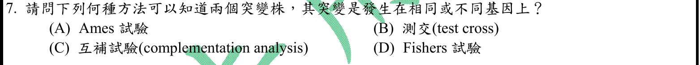
本地原卷PDF1 · 官方混科卷PDF19 · 官方原答案PDF1最下方生物表 · 已核對同年生物釋疑PDF28–29（未列本題）
官方採計：C 原答案：C
未列本輪取得的109年度釋疑PDF28–29；依同年答案採計，不宣稱沒有其他未取得公告
主分類：Ch20 DNA Tools and Biotechnology
20.2 / Determining Gene Function
目錄行1254；條目起始印刷頁426；實際目錄 PDF40
主分類理由：20.2 / Determining Gene Function：由突變表型推論基因是否相同是基因功能鑑定，目錄未單列互補試驗。
次分類理由：無另列最小次條目；Alberts互補段明確區分同／不同基因功能缺失；20.2基因功能鑑定最接近真實目錄，沒有假造Complementation子目。
科學說明：C。通常將兩個隱性功能缺失突變置於可檢驗互補的系統：不同基因可彼此提供功能，同基因通常不能。Campbell提供功能鑑定框架，Alberts互補專節支持實驗判讀；此規則有適用條件，不能套用所有顯性突變。
來源涵蓋範圍：Campbell提供列示分類原理；未直接涵蓋的細節由具名補充來源與同年釋疑支援，取得及實讀界線見來源紀錄。
教材正文：印刷426／PDF475、印刷427／PDF476
補充來源：S07
另行比較：互補試驗是否就是測交或Ames？
Alberts互補段明確區分同／不同基因功能缺失；20.2基因功能鑑定最接近真實目錄，沒有假造Complementation子目。
結論：證據確認，分類疑義已解決。完整覆核紀錄
Q08 · 18.1 / Operons: The Basic Concept 正式分類
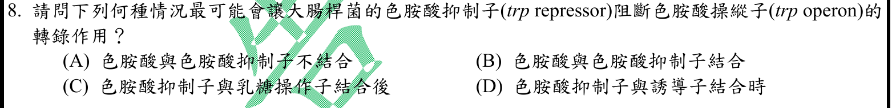
本地原卷PDF1 · 官方混科卷PDF19 · 官方原答案PDF1最下方生物表 · 已核對同年生物釋疑PDF28–29（未列本題）
官方採計：B 原答案：B
未列本輪取得的109年度釋疑PDF28–29；依同年答案採計，不宣稱沒有其他未取得公告
主分類：Ch18 Regulation of Gene Expression
18.1 / Operons: The Basic Concept
目錄行1107；條目起始印刷頁366；實際目錄 PDF39
次分類：Ch18 Regulation of Gene Expression
18.1 / Repressible and Inducible Operons: Two Types of Negative Gene Regulation
目錄行1110；條目起始印刷頁368；實際目錄 PDF39
主分類理由：18.1 / Operons: The Basic Concept：色胺酸作共同抑制物活化抑制子的直接機制位於操縱子基本概念印刷367。
次分類理由：18.1 / Repressible and Inducible Operons: Two Types of Negative Gene Regulation：可抑制操縱子屬負調控類型，另保留其最小條目。
科學說明：B。色胺酸結合trp repressor後，使其可結合operator阻斷轉錄。不是色胺酸不結合，也不是與乳糖操作子結合；不混淆operator與promoter。
來源涵蓋範圍：Campbell正文支援分類原理；原題限定、同年釋疑細節與最小目錄邊界逐題保留。
教材正文：印刷366／PDF415、印刷367／PDF416、印刷368／PDF417、印刷369／PDF418
補充來源：本題未另列課本外來源
另行比較：共同抑制物機制應放基本概念或負調控類型？
直接結合機制在印刷367、負調控類型從368開始；因此主目調為Operons基本概念，類型另存同章次目。
結論：證據確認，分類疑義已解決。完整覆核紀錄
Q09 · 15.2 / X Inactivation in Female Mammals 正式分類
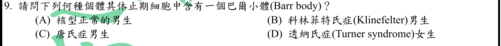
本地原卷PDF1 · 官方混科卷PDF19 · 官方原答案PDF1最下方生物表 · 已核對同年生物釋疑PDF28–29（未列本題）
官方採計：B 原答案：B
未列本輪取得的109年度釋疑PDF28–29；依同年答案採計，不宣稱沒有其他未取得公告
主分類：Ch15 The Chromosomal Basis of Inheritance
15.2 / X Inactivation in Female Mammals
目錄行948；條目起始印刷頁300；實際目錄 PDF39
次分類：Ch15 The Chromosomal Basis of Inheritance
15.4 / Human Conditions Due to Chromosomal Alterations
目錄行974；條目起始印刷頁308；實際目錄 PDF39
主分類理由：15.2 / X Inactivation in Female Mammals：巴爾小體數量的關鍵是X染色體不活化。
次分類理由：15.4 / Human Conditions Due to Chromosomal Alterations：XXY核型與Klinefelter表徵屬染色體改變疾病。
科學說明：B。典型XXY個體有一條不活化X；正常XY及唐氏症XY男性、典型XO透納氏症不具有一個Barr body。此為通常的核型判讀，不保證每個細胞切片都可見清楚小體；「休止期」按間期語境。
來源涵蓋範圍：Campbell正文支援分類原理；原題限定、同年釋疑細節與最小目錄邊界逐題保留。
教材正文：印刷300／PDF349、印刷308／PDF357、印刷309／PDF358
補充來源：本題未另列課本外來源
另行比較：可否只看Klinefelter病名分類？
由X不活化推算XXY有一Barr body，疾病條目只補核型；主次同章仍分開保留，非重複計數。
結論：證據確認，分類疑義已解決。完整覆核紀錄
Q10 · 15.3 / Mapping the Distance Between Genes Using Recombination Data: Scientific Inquiry 正式分類
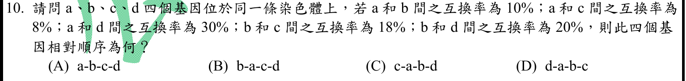
本地原卷PDF1 · 官方混科卷PDF19 · 官方原答案PDF1最下方生物表 · 已核對同年生物釋疑PDF28–29（未列本題）
官方採計：C 原答案：C
未列本輪取得的109年度釋疑PDF28–29；依同年答案採計，不宣稱沒有其他未取得公告
主分類：Ch15 The Chromosomal Basis of Inheritance
15.3 / Mapping the Distance Between Genes Using Recombination Data: Scientific Inquiry
目錄行961；條目起始印刷頁305；實際目錄 PDF39
主分類理由：15.3 / Mapping the Distance Between Genes Using Recombination Data: Scientific Inquiry：由重組頻率求相對位置，直接屬連鎖圖譜距離推算。
次分類理由：無另列最小次條目；依ab10、ac8、bc18推c-a-b，再依ad30、bd20置d於b外側；五組距離全部吻合c-a-b-d及其鏡像，排除其餘三選項。
科學說明：C。取a=0、b=10，因ac=8且bc=18得c=-8；ad=30且bd=20得d=30，順序c-a-b-d，反向等價。依題設以頻率近似圖距；長距離雙交換會低估距離，不能把任意實際重組率視作嚴格可加。
來源涵蓋範圍：Campbell正文支援分類原理；原題限定、同年釋疑細節與最小目錄邊界逐題保留。
教材正文：印刷305／PDF354、印刷306／PDF355
補充來源：本題未另列課本外來源
另行比較：交換率排序是否可用猜測位置？
依ab10、ac8、bc18推c-a-b，再依ad30、bd20置d於b外側；五組距離全部吻合c-a-b-d及其鏡像，排除其餘三選項。
結論：證據確認，分類疑義已解決。完整覆核紀錄
Q11 · 23.2 / Gene Pools and Allele Frequencies 正式分類
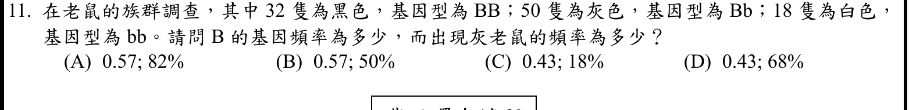
本地原卷PDF1 · 官方混科卷PDF19 · 官方原答案PDF1最下方生物表 · 已核對同年生物釋疑PDF28–29（未列本題）
官方採計：B 原答案：B
未列本輪取得的109年度釋疑PDF28–29；依同年答案採計，不宣稱沒有其他未取得公告
主分類：Ch23 The Evolution of Populations
23.2 / Gene Pools and Allele Frequencies
目錄行1442；條目起始印刷頁490；實際目錄 PDF41
主分類理由：23.2 / Gene Pools and Allele Frequencies：題目要求由觀察到的基因型數求等位基因與表型頻率。
次分類理由：無另列最小次條目；獨立以等位基因總数200計114個B，得0.57；灰色50/100，直接觀察即可，主目確為Gene Pools and Allele Frequencies。
科學說明：B。總數100；B頻率=(2×32+50)/(2×100)=0.57，灰鼠頻率=50/100=50%。直接計數，不須假設Hardy–Weinberg平衡，也不以0.57平方推估已觀察基因型。
來源涵蓋範圍：Campbell正文支援分類原理；原題限定、同年釋疑細節與最小目錄邊界逐題保留。
教材正文：印刷490／PDF539、印刷491／PDF540
補充來源：本題未另列課本外來源
另行比較：是否須使用Hardy–Weinberg推估？
獨立以等位基因總数200計114個B，得0.57；灰色50/100，直接觀察即可，主目確為Gene Pools and Allele Frequencies。
結論：證據確認，分類疑義已解決。完整覆核紀錄
Q12 · 13.3 / The Stages of Meiosis 正式分類
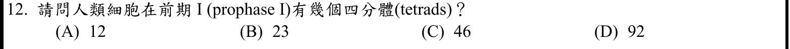
本地原卷PDF2 · 官方混科卷PDF20 · 官方原答案PDF1最下方生物表 · 已核對同年生物釋疑PDF28–29（未列本題）
官方採計：B 原答案：B
未列本輪取得的109年度釋疑PDF28–29；依同年答案採計，不宣稱沒有其他未取得公告
主分類：Ch13 Meiosis and Sexual Life Cycles
13.3 / The Stages of Meiosis
目錄行837；條目起始印刷頁259；實際目錄 PDF38
次分類：Ch13 Meiosis and Sexual Life Cycles
13.2 / Sets of Chromosomes in Human Cells
目錄行824；條目起始印刷頁256；實際目錄 PDF38
主分類理由：13.3 / The Stages of Meiosis：前期I同源染色體聯會形成四分體，直接對應減數分裂階段。
次分類理由：13.2 / Sets of Chromosomes in Human Cells：人類正常二倍體23對染色體提供四分體數目的計數前提。
科學說明：B。正常二倍體減數分裂前期I有23個二價體，每個含四條染色分體；46條染色體及92條染色分體不是四分體數。男性性染色體在可配對區聯會，不代表X與Y全長同源。
來源涵蓋範圍：Campbell正文支援分類原理；原題限定、同年釋疑細節與最小目錄邊界逐題保留。
教材正文：印刷256／PDF305、印刷257／PDF306、印刷259／PDF308、印刷260／PDF309、印刷261／PDF310、印刷262／PDF311
補充來源：本題未另列課本外來源
另行比較：23、46、92的計數單位是否混淆？
前期I的23對同源染色體組成23四分體，46是染色體數、92是染色分體；兩個13章最小條目均保留。
結論：證據確認，分類疑義已解決。完整覆核紀錄
Q13 · 18.1 / Positive Gene Regulation 正式分類
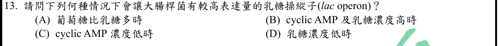
本地原卷PDF2 · 官方混科卷PDF20 · 官方原答案PDF1最下方生物表 · 已核對同年生物釋疑PDF28–29（未列本題）
官方採計：B 原答案：B
未列本輪取得的109年度釋疑PDF28–29；依同年答案採計，不宣稱沒有其他未取得公告
主分類：Ch18 Regulation of Gene Expression
18.1 / Positive Gene Regulation
目錄行1113；條目起始印刷頁369；實際目錄 PDF39
次分類：Ch18 Regulation of Gene Expression
18.1 / Repressible and Inducible Operons: Two Types of Negative Gene Regulation
目錄行1110；條目起始印刷頁368；實際目錄 PDF39
主分類理由：18.1 / Positive Gene Regulation：高cAMP透過CAP促進lac轉錄，辨別較高表達量的關鍵為正調控。
次分類理由：18.1 / Repressible and Inducible Operons: Two Types of Negative Gene Regulation：乳糖衍生的異乳糖解除lac repressor抑制，須同時保留可誘導負調控。
科學說明：B。高cAMP且有乳糖可同時具CAP活化與解除抑制。直接結合抑制子的誘導物為異乳糖，原題以乳糖作培養條件；不能僅有cAMP而忽略抑制子。
來源涵蓋範圍：Campbell正文支援分類原理；原題限定、同年釋疑細節與最小目錄邊界逐題保留。
教材正文：印刷368／PDF417、印刷369／PDF418、印刷370／PDF419
補充來源：本題未另列課本外來源
另行比較：只解除lac抑制是否已是高表達？
印刷369–370需CAP-cAMP正調控並有乳糖解除負調控，故正調控主目與負調控次目不可刪任一。
結論：證據確認，分類疑義已解決。完整覆核紀錄
Q14 · 10.4 / The Calvin cycle uses the chemical energy of ATP and NADPH to reduce CO2 to sugar 正式分類
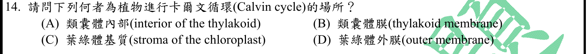
本地原卷PDF2 · 官方混科卷PDF20 · 官方原答案PDF1最下方生物表 · 已核對同年生物釋疑PDF28–29（未列本題）
官方採計：C 原答案：C
未列本輪取得的109年度釋疑PDF28–29；依同年答案採計，不宣稱沒有其他未取得公告
主分類：Ch10 Photosynthesis
10.4 / The Calvin cycle uses the chemical energy of ATP and NADPH to reduce CO2 to sugar
目錄行665；條目起始印刷頁201；實際目錄 PDF37
主分類理由：10.4 / The Calvin cycle uses the chemical energy of ATP and NADPH to reduce CO2 to sugar：Calvin循環本身的Concept 10.4沒有更小目錄子項，為適當最小條目。
次分類理由：無另列最小次條目；PDF目錄37的10.4無更細子目；正文191–192的stroma與201–202一致，採Concept本身即最小真實條目。
科學說明：C。Calvin循環位於葉綠體基質；印刷191–192概覽圖文與201–202循環一致。類囊體膜進行光反應，不是碳固定循環的位置。
來源涵蓋範圍：Campbell正文支援分類原理；原題限定、同年釋疑細節與最小目錄邊界逐題保留。
教材正文：印刷191／PDF240、印刷192／PDF241、印刷201／PDF250、印刷202／PDF251
補充來源：本題未另列課本外來源
另行比較：Calvin循環是否需虛設碳固定小目？
PDF目錄37的10.4無更細子目；正文191–192的stroma與201–202一致，採Concept本身即最小真實條目。
結論：證據確認，分類疑義已解決。完整覆核紀錄
Q15 · 39.4 / Mechanical Stimuli 正式分類
本地原卷PDF2 · 官方混科卷PDF20 · 官方原答案PDF1最下方生物表 · 已核對同年生物釋疑PDF28–29（未列本題）
官方採計：A 原答案：A
未列本輪取得的109年度釋疑PDF28–29；依同年答案採計，不宣稱沒有其他未取得公告
主分類：Ch39 Plant Responses to Internal and External Signals
39.4 / Mechanical Stimuli
目錄行2586；條目起始印刷頁861；實際目錄 PDF45
主分類理由：39.4 / Mechanical Stimuli：含羞草受機械刺激的快速膨壓運動直接屬Mechanical Stimuli。
次分類理由：無另列最小次條目；印刷861–862的pulvini為快速膨壓運動，選A，Mechanical Stimuli直接對應；無需另加生長向性。
科學說明：A。葉枕由運動細胞構成，離子與水移動改變膨壓使葉片迅速運動；不是生長素造成的緩慢生長向性，也不把整個葉柄視為特化膨大部位。
來源涵蓋範圍：Campbell正文支援分類原理；原題限定、同年釋疑細節與最小目錄邊界逐題保留。
教材正文：印刷861／PDF910、印刷862／PDF911
補充來源：本題未另列課本外來源
另行比較：是否為氣孔保衛細胞或葉柄生長運動？
印刷861–862的pulvini為快速膨壓運動，選A，Mechanical Stimuli直接對應；無需另加生長向性。
結論：證據確認，分類疑義已解決。完整覆核紀錄
Q16 · 56.3 / Landscape Structure and Biodiversity 正式分類
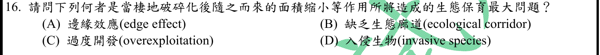
本地原卷PDF2 · 官方混科卷PDF20 · 官方原答案PDF1最下方生物表 · 已核對同年生物釋疑PDF28–29（未列本題）
官方採計：A 原答案：A
未列本輪取得的109年度釋疑PDF28–29；依同年答案採計，不宣稱沒有其他未取得公告
主分類：Ch56 Conservation Biology and Global Change
56.3 / Landscape Structure and Biodiversity
目錄行3768；條目起始印刷頁1270；實際目錄 PDF50
次分類：Ch56 Conservation Biology and Global Change
56.1 / Threats to Biodiversity
目錄行3745；條目起始印刷頁1263；實際目錄 PDF50
主分類理由：56.3 / Landscape Structure and Biodiversity：破碎棲地邊緣與核心比例改變屬景觀結構與多樣性。
次分類理由：56.1 / Threats to Biodiversity：棲地破壞是造成破碎化的生物多樣性威脅，保留其背景條目。
科學說明：A。面積縮小及破碎化增加邊緣相對核心比例，改變微氣候與物種互動。廊道可緩和隔離，但題幹問面積縮小伴隨的問題；「最大」為考題選項判讀，不主張所有保育場域排序相同。
來源涵蓋範圍：Campbell正文支援分類原理；原題限定、同年釋疑細節與最小目錄邊界逐題保留。
教材正文：印刷1263／PDF1312、印刷1264／PDF1313、印刷1270／PDF1319、印刷1271／PDF1320
補充來源：本題未另列課本外來源
另行比較：廊道缺乏是否較邊緣效應優先？
以題幹面積縮小的直接幾何後果判A，印刷1270–1271支持邊緣／核心改變；棲地威脅作次目，保留「最大」的情境限制。
結論：證據確認，分類疑義已解決。完整覆核紀錄
Q17 · 9.6 / The Versatility of Catabolism 正式分類
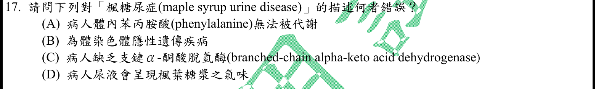
本地原卷PDF2 · 官方混科卷PDF20 · 官方原答案PDF1最下方生物表 · 已核對同年生物釋疑PDF28–29（未列本題）
官方採計：A 原答案：A
未列本輪取得的109年度釋疑PDF28–29；依同年答案採計，不宣稱沒有其他未取得公告
主分類：Ch09 Cellular Respiration and Fermentation
9.6 / The Versatility of Catabolism
目錄行608；條目起始印刷頁182；實際目錄 PDF37
次分類：Ch14 Mendel and the Gene Idea
14.4 / Recessively Inherited Disorders
目錄行911；條目起始印刷頁285；實際目錄 PDF38
主分類理由：9.6 / The Versatility of Catabolism：錯誤選項涉及胺基酸代謝底物，主分類以分解代謝而非單看遺傳病名稱。
次分類理由：14.4 / Recessively Inherited Disorders：B選項的體染色體隱性模式亦須查核，另保留隱性遺傳疾病。
科學說明：A為錯誤敘述。楓糖尿症涉及支鏈α-酮酸脫氫酶複合體，使亮胺酸、異亮胺酸、纈胺酸及其酮酸代謝受阻；苯丙胺酸代謝障礙是典型PKU線索。GeneReviews補足Campbell未列的具體疾病；完整原題英文確為maple syrup urine disease。
來源涵蓋範圍：Campbell提供列示分類原理；未直接涵蓋的細節由具名補充來源與同年釋疑支援，取得及實讀界線見來源紀錄。
教材正文：印刷182／PDF231、印刷183／PDF232、印刷285／PDF334、印刷286／PDF335、印刷287／PDF336
補充來源：S17
另行比較：疾病遺傳模式或錯誤代謝底物何者主分類？
答案A靠支鏈胺基酸代謝與苯丙胺酸區別，主目改9.6分解代謝、14.4隱性疾病作次目；原圖及讀回確認英文含syrup，未添加不存在的漏字錯誤。
結論：證據確認，分類疑義已解決。完整覆核紀錄
Q18 · 18.2 / Regulation of Transcription Initiation 正式分類
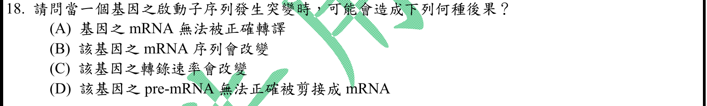
本地原卷PDF2 · 官方混科卷PDF20 · 官方原答案PDF1最下方生物表 · 已核對同年生物釋疑PDF28–29（未列本題）
官方採計：C 原答案：C
未列本輪取得的109年度釋疑PDF28–29；依同年答案採計，不宣稱沒有其他未取得公告
主分類：Ch18 Regulation of Gene Expression
18.2 / Regulation of Transcription Initiation
目錄行1126；條目起始印刷頁373；實際目錄 PDF39
次分類：Ch17 Gene Expression: From Gene to Protein
17.2 / Synthesis of an RNA Transcript
目錄行1052；條目起始印刷頁342；實際目錄 PDF39
主分類理由：18.2 / Regulation of Transcription Initiation：啟動子序列改變影響起始複合體募集及轉錄速率，主屬轉錄起始調控。
次分類理由：17.2 / Synthesis of an RNA Transcript：轉錄合成條目補足RNA聚合酶辨認啟動子的機制。
科學說明：C為最直接後果。突變可提高、降低或不明顯改變轉錄率，非必然完全停止。啟動子定義有時涵蓋起始點附近，故不把B寫成在任何情況絕不可能；題設未提供變異位置，不能直接推論轉譯或剪接缺陷。
來源涵蓋範圍：Campbell正文支援分類原理；原題限定、同年釋疑細節與最小目錄邊界逐題保留。
教材正文：印刷342／PDF391、印刷343／PDF392、印刷344／PDF393、印刷373／PDF422、印刷374／PDF423、印刷375／PDF424
補充來源：本題未另列課本外來源
另行比較：promoter突變是否保證不影響mRNA序列？
轉錄速率是最直接C，但起始點相關突變存在例外，不作絕對排除；18.2調控主目與17.2轉錄合成次目分工清楚。
結論：證據確認，分類疑義已解決。完整覆核紀錄
Q19 · 9.6 / Biosynthesis (Anabolic Pathways) 正式分類
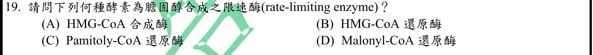
本地原卷PDF2 · 官方混科卷PDF20 · 官方原答案PDF1最下方生物表 · 已核對同年生物釋疑PDF28–29（未列本題）
官方採計：B 原答案：B
未列本輪取得的109年度釋疑PDF28–29；依同年答案採計，不宣稱沒有其他未取得公告
主分類：Ch09 Cellular Respiration and Fermentation
9.6 / Biosynthesis (Anabolic Pathways)
目錄行611；條目起始印刷頁183；實際目錄 PDF37
次分類：Ch05 The Structure and Function of Large Biological Molecules
5.3 / Steroids
目錄行255；條目起始印刷頁75；實際目錄 PDF36
主分類理由：9.6 / Biosynthesis (Anabolic Pathways)：膽固醇合成為合成代謝，目錄未獨立列膽固醇限速酵素。
次分類理由：5.3 / Steroids：Steroids提供膽固醇的化學類型與生物功能。
科學說明：B。HMG-CoA reductase將HMG-CoA還原為mevalonate，是經典限速步驟；不等同HMG-CoA synthase。Campbell只有上位生合成框架，具體反應由公開生化教材支持；C選項Pamitoly-CoA拼字原樣保留。
來源涵蓋範圍：Campbell提供列示分類原理；未直接涵蓋的細節由具名補充來源與同年釋疑支援，取得及實讀界線見來源紀錄。
教材正文：印刷75／PDF124、印刷183／PDF232
補充來源：S19
另行比較：HMG-CoA synthase與reductase哪個限速？
公開生化教材明確支持還原酶至mevalonate，B；Campbell不虛報含此細節，主生合成／次固醇屬性保留。
結論：證據確認，分類疑義已解決。完整覆核紀錄
Q20 · 9.6 / The Versatility of Catabolism 正式分類
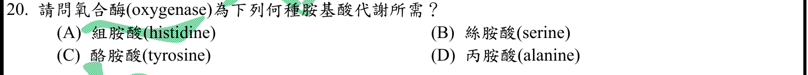
本地原卷PDF2 · 官方混科卷PDF20 · 官方原答案PDF1最下方生物表 · 已核對同年生物釋疑PDF28–29（未列本題）
官方採計：C 原答案：C
未列本輪取得的109年度釋疑PDF28–29；依同年答案採計，不宣稱沒有其他未取得公告
主分類：Ch09 Cellular Respiration and Fermentation
9.6 / The Versatility of Catabolism
目錄行608；條目起始印刷頁182；實際目錄 PDF37
主分類理由：9.6 / The Versatility of Catabolism：題目要求胺基酸分解途徑中的氧合酵素，屬分解代謝多樣性。
次分類理由：無另列最小次條目；IUBMB EC1.13.11.5反應式直接用O2開環，對應tyrosine；分類維持胺基酸分解，不移至電子傳遞。
科學說明：C。酪胺酸分解中的homogentisate 1,2-dioxygenase以O2參與芳環開環，IUBMB EC1.13.11.5反應式可核查。Campbell不逐列此路徑；不將oxygenase等同氧化磷酸化的末端氧受體。原題「酪胺酸」與通常「酪胺酸」用字差異保留。
來源涵蓋範圍：Campbell提供列示分類原理；未直接涵蓋的細節由具名補充來源與同年釋疑支援，取得及實讀界線見來源紀錄。
教材正文：印刷182／PDF231、印刷183／PDF232
補充來源：S20
另行比較：oxygenase是否等同一般需氧氧化？
IUBMB EC1.13.11.5反應式直接用O2開環，對應tyrosine；分類維持胺基酸分解，不移至電子傳遞。
結論：證據確認，分類疑義已解決。完整覆核紀錄
Q21 · 14.3 / Extending Mendelian Genetics for Two or More Genes 正式分類
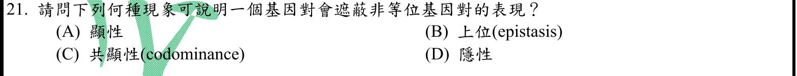
本地原卷PDF2 · 官方混科卷PDF20 · 官方原答案PDF1最下方生物表 · 已核對同年生物釋疑PDF28–29（未列本題）
官方採計：B 原答案：B
未列本輪取得的109年度釋疑PDF28–29；依同年答案採計，不宣稱沒有其他未取得公告
主分類：Ch14 Mendel and the Gene Idea
14.3 / Extending Mendelian Genetics for Two or More Genes
目錄行895；條目起始印刷頁281；實際目錄 PDF38
主分類理由：14.3 / Extending Mendelian Genetics for Two or More Genes：非等位基因間遮蔽屬多基因遺傳延伸中的上位作用。
次分類理由：無另列最小次條目；核對印刷281–282區分不同座位上位作用與同座位顯隱性，選B；多基因孟德爾延伸是實際最小目。
科學說明：B。Epistasis是不同基因座互動造成表型遮蔽；顯性與隱性通常描述同基因座等位基因關係，共顯性亦非本題機制。
來源涵蓋範圍：Campbell正文支援分類原理；原題限定、同年釋疑細節與最小目錄邊界逐題保留。
教材正文：印刷281／PDF330、印刷282／PDF331
補充來源：本題未另列課本外來源
另行比較：非等位基因遮蔽是否可称顯性？
核對印刷281–282區分不同座位上位作用與同座位顯隱性，選B；多基因孟德爾延伸是實際最小目。
結論：證據確認，分類疑義已解決。完整覆核紀錄
Q22 · 44.1 / Osmoregulatory Challenges and Mechanisms 正式分類
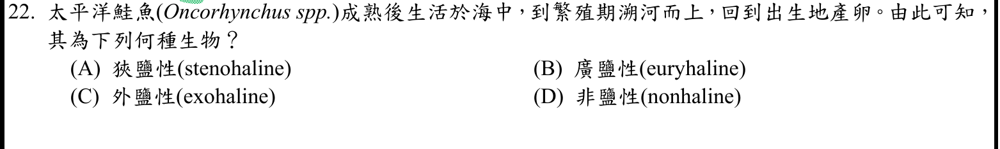
本地原卷PDF2 · 官方混科卷PDF20 · 官方原答案PDF1最下方生物表 · 已核對同年生物釋疑PDF28–29（未列本題）
官方採計：B 原答案：B
未列本輪取得的109年度釋疑PDF28–29；依同年答案採計，不宣稱沒有其他未取得公告
主分類：Ch44 Osmoregulation and Excretion
44.1 / Osmoregulatory Challenges and Mechanisms
目錄行2944；條目起始印刷頁978；實際目錄 PDF47
主分類理由：44.1 / Osmoregulatory Challenges and Mechanisms：鮭魚跨海水與淡水時的調滲能力直接屬滲透調節挑戰。
次分類理由：無另列最小次條目；可跨越海淡水鹽度並完成生活史，依教材例為廣鹽性，B；分類為調滲機制而非僅動物遷徙。
科學說明：B。可適應寬廣鹽度稱euryhaline；海淡水遷移時調整鰓與腎臟離子水分處理，不表示體液直接隨外界任意改變。
來源涵蓋範圍：Campbell正文支援分類原理；原題限定、同年釋疑細節與最小目錄邊界逐題保留。
教材正文：印刷978／PDF1027、印刷979／PDF1028、印刷980／PDF1029
補充來源：本題未另列課本外來源
另行比較：溯河鮭魚是否為狹鹽而只短暫進淡水？
可跨越海淡水鹽度並完成生活史，依教材例為廣鹽性，B；分類為調滲機制而非僅動物遷徙。
結論：證據確認，分類疑義已解決。完整覆核紀錄
Q23 · 45.2 / Coordination of the Endocrine and Nervous Systems 正式分類
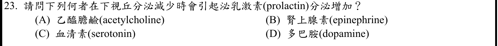
本地原卷PDF3 · 官方混科卷PDF21 · 官方原答案PDF1最下方生物表 · 同年釋疑PDF28、同年釋疑PDF29
官方採計：D 原答案：D
109年度7/1審議會議釋疑維持原答案D
主分類：Ch45 Hormones and the Endocrine System
45.2 / Coordination of the Endocrine and Nervous Systems
目錄行3023；條目起始印刷頁1006；實際目錄 PDF47
主分類理由：45.2 / Coordination of the Endocrine and Nervous Systems：下視丘經垂體門脈控制腺垂體，屬內分泌與神經系統協調。
次分類理由：無另列最小次條目；完整核對官方PDF28末段及29續圖，D為解除抑制；Campbell的刺激訊號未否定多巴胺抑制，補充Prolactin段說明雙向調節。
科學說明：D。下視丘多巴胺抑制泌乳激素；減少即解除抑制。官方PDF28–29跨頁Vander圖文與回覆均維持D。Campbell提及PRH的刺激不能排除主要的多巴胺抑制調控；另由公開內分泌教材補足。不冒稱讀取Vander全書。
來源涵蓋範圍：Campbell提供列示分類原理；未直接涵蓋的細節由具名補充來源與同年釋疑支援，取得及實讀界線見來源紀錄。
教材正文：印刷1006／PDF1055、印刷1007／PDF1056、印刷1008／PDF1057
補充來源：S23
另行比較：Campbell的PRH刺激圖是否與dopamine矛盾？
完整核對官方PDF28末段及29續圖，D為解除抑制；Campbell的刺激訊號未否定多巴胺抑制，補充Prolactin段說明雙向調節。
結論：證據確認，分類疑義已解決。完整覆核紀錄
Q24 · 15.3 / Genetic Recombination and Linkage 正式分類
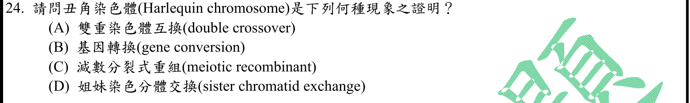
本地原卷PDF3 · 官方混科卷PDF21 · 官方原答案PDF1最下方生物表 · 已核對同年生物釋疑PDF28–29（未列本題）
官方採計：D 原答案：D
未列本輪取得的109年度釋疑PDF28–29；依同年答案採計，不宣稱沒有其他未取得公告
主分類：Ch15 The Chromosomal Basis of Inheritance
15.3 / Genetic Recombination and Linkage
目錄行958；條目起始印刷頁302；實際目錄 PDF39
次分類：Ch12 The Cell Cycle
12.1 / Distribution of Chromosomes During Eukaryotic Cell Division
目錄行763；條目起始印刷頁236；實際目錄 PDF38
主分類理由：15.3 / Genetic Recombination and Linkage：染色分體DNA交換的最接近真實目錄家族是Genetic Recombination and Linkage，目錄並未獨列SCE。
次分類理由：12.1 / Distribution of Chromosomes During Eukaryotic Cell Division：保留姐妹染色分體形成及分離的細胞分裂基礎，防止與同源染色體混同。
科學說明：D。BrdU差別染色使姐妹染色分體交換呈深淺交替。Campbell該主條目主要講減數分裂非姐妹交換，不能充作SCE直接證明；直接判讀依Wolff作者回顧及Perry/Wolff原論文摘要。SCE通常不產生不同等位基因的新組合，故C的meiotic recombinant不是同義詞。
來源涵蓋範圍：Campbell提供列示分類原理；未直接涵蓋的細節由具名補充來源與同年釋疑支援，取得及實讀界線見來源紀錄。
教材正文：印刷236／PDF285、印刷237／PDF286、印刷302／PDF351、印刷303／PDF352、印刷304／PDF353
補充來源：S24
另行比較：Harlequin可否當成減數分裂非姐妹重組？
重開完整Q24圖並讀Wolff作者說明，確定SCE為D；標記15.3只提供交換家族框架，12.1補姐妹構造，明文保存與教材非姐妹交換的範圍差。
結論：證據確認，分類疑義已解決。完整覆核紀錄
Q25 · 19.3 / Emerging Viral Diseases 正式分類
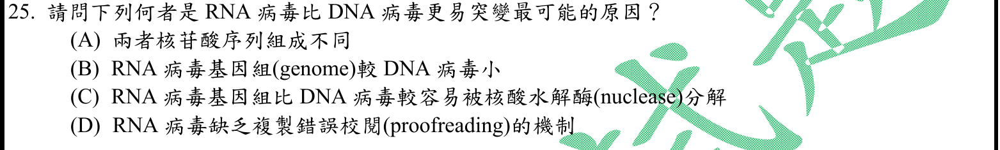
本地原卷PDF3 · 官方混科卷PDF21 · 官方原答案PDF1最下方生物表 · 已核對同年生物釋疑PDF28–29（未列本題）
官方採計：D 原答案：D
未列本輪取得的109年度釋疑PDF28–29；依同年答案採計，不宣稱沒有其他未取得公告
主分類：Ch19 Viruses
19.3 / Emerging Viral Diseases
目錄行1215；條目起始印刷頁409；實際目錄 PDF40
次分類：Ch16 The Molecular Basis of Inheritance
16.2 / Proofreading and Repairing DNA
目錄行1013；條目起始印刷頁327；實際目錄 PDF39
主分類理由：19.3 / Emerging Viral Diseases：RNA病毒的高突變率及疾病出現直接載於病毒新興疾病條目。
次分類理由：16.2 / Proofreading and Repairing DNA：DNA聚合酶校對條目作錯誤率差異的機制比較。
科學說明：D為教材一般規則。多數RNA病毒複製缺少有效校對，但冠狀病毒nsp10–nsp14具有校對外切酶功能，原作者生化實驗支持此例外。因此保留原選項，不把「RNA病毒缺乏」改寫成毫無例外的普遍定律。
來源涵蓋範圍：Campbell提供列示分類原理；未直接涵蓋的細節由具名補充來源與同年釋疑支援，取得及實讀界線見來源紀錄。
教材正文：印刷327／PDF376、印刷409／PDF458、印刷410／PDF459
補充來源：S25
另行比較：所有RNA病毒是否毫無校對？
原作者nsp10–nsp14實驗證明冠狀病毒例外；D按一般教材規則採計，19.3高突變主目與16.2校對次目保持，沒有把例外刪除。
結論：證據確認，分類疑義已解決。完整覆核紀錄
Q26 · 7.5 / Endocytosis 正式分類
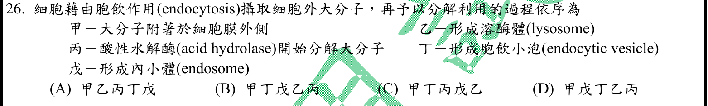
本地原卷PDF3 · 官方混科卷PDF21 · 官方原答案PDF1最下方生物表 · 已核對同年生物釋疑PDF28–29（未列本題）
官方採計：B 原答案：B
未列本輪取得的109年度釋疑PDF28–29；依同年答案採計，不宣稱沒有其他未取得公告
主分類：Ch07 Membrane Structure and Function
7.5 / Endocytosis
目錄行466；條目起始印刷頁139；實際目錄 PDF36
次分類：Ch06 A Tour of the Cell
6.4 / Lysosomes: Digestive Compartments
目錄行349；條目起始印刷頁107；實際目錄 PDF36
主分類理由：7.5 / Endocytosis：膜內陷形成囊泡並送入內體，主題是胞吞攝取與胞內運輸順序。
次分類理由：6.4 / Lysosomes: Digestive Compartments：溶酶體水解酶與消化功能構成後續處理步驟。
科學說明：官方B：甲丁戊乙丙，是四選項中合理的簡化順序。晚期內體已可開始水解，成熟內體／溶酶體為連續路徑，不強稱降解只能等成熟溶酶體才開始。C將水解置於形成內體之前，也不能因上述差異改採C。原題胞飲(endocytosis)中英範圍不等同，endocytosis為較廣義胞吞。
來源涵蓋範圍：Campbell提供列示分類原理；未直接涵蓋的細節由具名補充來源與同年釋疑支援，取得及實讀界線見來源紀錄。
教材正文：印刷107／PDF156、印刷108／PDF157、印刷139／PDF188、印刷140／PDF189
補充來源：S26
另行比較：晚期內體可水解是否就要改採C？
重新核對甲乙丙丁戊原圖，C把水解放內體之前亦不合理；官方B是選項最合適簡化。晚期內體可先降解及胞飲／胞吞用語差異另存，不改官方採計。
結論：證據確認，分類疑義已解決。完整覆核紀錄
Q27 · 7.4 / Cotransport: Coupled Transport by a Membrane Protein 正式分類
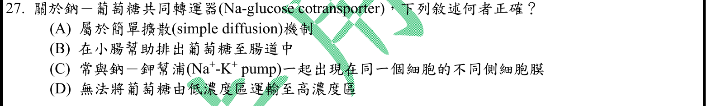
本地原卷PDF3 · 官方混科卷PDF21 · 官方原答案PDF1最下方生物表 · 已核對同年生物釋疑PDF28–29（未列本題）
官方採計：C 原答案：C
未列本輪取得的109年度釋疑PDF28–29；依同年答案採計，不宣稱沒有其他未取得公告
主分類：Ch07 Membrane Structure and Function
7.4 / Cotransport: Coupled Transport by a Membrane Protein
目錄行456；條目起始印刷頁138；實際目錄 PDF36
次分類：Ch41 Animal Nutrition
41.3 / Absorption in the Small Intestine
目錄行2717；條目起始印刷頁909；實際目錄 PDF46
主分類理由：7.4 / Cotransport: Coupled Transport by a Membrane Protein：Na+梯度驅動葡萄糖共同運輸，直接屬耦合運輸機制。
次分類理由：41.3 / Absorption in the Small Intestine：小腸吸收說明頂端共同轉運器與基底外側鈉鉀幫浦的極性配置。
科學說明：C。小腸頂端SGLT與基底外側Na+/K+幫浦位於同細胞不同側；葡萄糖可逆濃度梯度進入。Campbell印刷139寫glucose moving down its concentration gradient，與印刷910的against concentration gradients及耦合原理有措辭差異；原教材不改寫，依910及梯度供能判讀，不因139否認逆梯度能力。
來源涵蓋範圍：Campbell正文支援分類原理；原題限定、同年釋疑細節與最小目錄邊界逐題保留。
教材正文：印刷138／PDF187、印刷139／PDF188、印刷909／PDF958、印刷910／PDF959
補充來源：本題未另列課本外來源
另行比較：印刷139說down是否支持不能逆梯度？
重新看原題C及D，與印刷910的against及極性轉運圖交叉核對；共同運輸可逆葡萄糖梯度，故C成立，139措辭差異明列而不更動教材。
結論：證據確認，分類疑義已解決。完整覆核紀錄
Q28 · 48.3 / Generation of Action Potentials: A Closer Look 正式分類
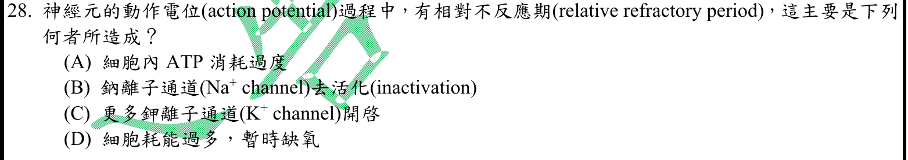
本地原卷PDF3 · 官方混科卷PDF21 · 官方原答案PDF1最下方生物表 · 已核對同年生物釋疑PDF28–29（未列本題）
官方採計：C 原答案：C
未列本輪取得的109年度釋疑PDF28–29；依同年答案採計，不宣稱沒有其他未取得公告
主分類：Ch48 Neurons, Synapses, and Signaling
48.3 / Generation of Action Potentials: A Closer Look
目錄行3209；條目起始印刷頁1073；實際目錄 PDF48
主分類理由：48.3 / Generation of Action Potentials: A Closer Look：相對不反應期與復極／過極化的電壓閘控通道狀態直接屬動作電位生成。
次分類理由：無另列最小次條目；教材過極化及出版社樣章PDF5支持延遲K導度主要解釋相對期，C；同時保留Na通道部分恢復的貢獻，未寫成絕對互斥。
科學說明：C。鉀通道延遲關閉、鉀導度仍高，使膜較難達閾值，需較強刺激；鈉通道失活主要解釋絕對不反應期，恢復尚未完全亦可參與相對期。原選項「更多」按相對靜息狀態理解，不意指整段相對期開啟數持續增加。
來源涵蓋範圍：Campbell提供列示分類原理；未直接涵蓋的細節由具名補充來源與同年釋疑支援，取得及實讀界線見來源紀錄。
教材正文：印刷1073／PDF1122、印刷1074／PDF1123、印刷1075／PDF1124
補充來源：S28
另行比較：相對與絕對不反應期是否可只看Na通道？
教材過極化及出版社樣章PDF5支持延遲K導度主要解釋相對期，C；同時保留Na通道部分恢復的貢獻，未寫成絕對互斥。
結論：證據確認，分類疑義已解決。完整覆核紀錄
Q29 · 48.3 / Conduction of Action Potentials 正式分類
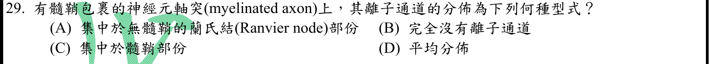
本地原卷PDF3 · 官方混科卷PDF21 · 官方原答案PDF1最下方生物表 · 已核對同年生物釋疑PDF28–29（未列本題）
官方採計：A 原答案：A
未列本輪取得的109年度釋疑PDF28–29；依同年答案採計，不宣稱沒有其他未取得公告
主分類：Ch48 Neurons, Synapses, and Signaling
48.3 / Conduction of Action Potentials
目錄行3212；條目起始印刷頁1075；實際目錄 PDF48
主分類理由：48.3 / Conduction of Action Potentials：髓鞘和郎氏結的通道分布使動作電位跳躍式傳導。
次分類理由：無另列最小次條目；圖文直接支持郎氏結集中電壓閘控Na通道、跳躍傳導；採A但限制通道種類，不主張其他部位全無離子通道。
科學說明：A。再生動作電位所需的電壓閘控Na+通道集中於郎氏結；題目泛稱「離子通道」較粗略，並非所有種類通道都只存在結上，亦非髓鞘下完全沒有通道。
來源涵蓋範圍：Campbell正文支援分類原理；原題限定、同年釋疑細節與最小目錄邊界逐題保留。
教材正文：印刷1075／PDF1124、印刷1076／PDF1125、印刷1077／PDF1126
補充來源：本題未另列課本外來源
另行比較：題幹泛稱所有離子通道是否準確？
圖文直接支持郎氏結集中電壓閘控Na通道、跳躍傳導；採A但限制通道種類，不主張其他部位全無離子通道。
結論：證據確認，分類疑義已解決。完整覆核紀錄
Q30 · 50.5 / Other Types of Muscle 正式分類
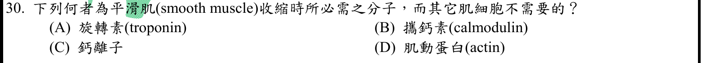
本地原卷PDF3 · 官方混科卷PDF21 · 官方原答案PDF1最下方生物表 · 已核對同年生物釋疑PDF28–29（未列本題）
官方採計：B 原答案：B
未列本輪取得的109年度釋疑PDF28–29；依同年答案採計，不宣稱沒有其他未取得公告
主分類：Ch50 Sensory and Motor Mechanisms
50.5 / Other Types of Muscle
目錄行3384；條目起始印刷頁1131；實際目錄 PDF49
次分類：Ch50 Sensory and Motor Mechanisms
50.5 / Vertebrate Skeletal Muscle
目錄行3381；條目起始印刷頁1126；實際目錄 PDF49
主分類理由：50.5 / Other Types of Muscle：平滑肌的鈣調控機制載於其他肌肉類型。
次分類理由：50.5 / Vertebrate Skeletal Muscle：骨骼肌的troponin調控提供題目要求的跨肌種比較。
科學說明：B。平滑肌Ca2+結合calmodulin後活化MLCK，調控肌球蛋白；骨骼肌／心肌收縮的主要直接開關為troponin。其他肌細胞仍有calmodulin參與其他過程，原題「不需要」限收縮直接調控路徑；旋轉素／攜鈣素為原題用語。
來源涵蓋範圍：Campbell正文支援分類原理；原題限定、同年釋疑細節與最小目錄邊界逐題保留。
教材正文：印刷1128／PDF1177、印刷1129／PDF1178、印刷1131／PDF1180、印刷1132／PDF1181
補充來源：本題未另列課本外來源
另行比較：其他肌細胞是否完全沒有calmodulin？
比較平滑肌MLCK與骨骼肌troponin，B限主要收縮開關；不否認其他肌細胞的calmodulin，兩個50.5最小目同章照存。
結論：證據確認，分類疑義已解決。完整覆核紀錄
Q31 · 42.3 / Blood Vessel Structure and Function 正式分類
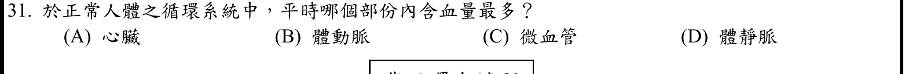
本地原卷PDF3 · 官方混科卷PDF21 · 官方原答案PDF1最下方生物表 · 已核對同年生物釋疑PDF28–29（未列本題）
官方採計：D 原答案：D
未列本輪取得的109年度釋疑PDF28–29；依同年答案採計，不宣稱沒有其他未取得公告
主分類：Ch42 Circulation and Gas Exchange
42.3 / Blood Vessel Structure and Function
目錄行2783；條目起始印刷頁929；實際目錄 PDF46
主分類理由：42.3 / Blood Vessel Structure and Function：靜脈高順應性和容量血管功能決定靜態血量分布。
次分類理由：無另列最小次條目；Klabunde容量血管段確認靜脈血量最多，D；不以微血管截面積答題，42.3血管結構功能直接對應。
科學說明：D。體靜脈系統容納最多循環血量；作者生理教材給典型靜脈容量約60–80%的範圍，不視為每人固定值。血量存量不同於總截面積、流速或心輸出量。
來源涵蓋範圍：Campbell提供列示分類原理；未直接涵蓋的細節由具名補充來源與同年釋疑支援，取得及實讀界線見來源紀錄。
教材正文：印刷929／PDF978、印刷930／PDF979、印刷931／PDF980
補充來源：S31
另行比較：最多血量是否等於最大總截面積？
Klabunde容量血管段確認靜脈血量最多，D；不以微血管截面積答題，42.3血管結構功能直接對應。
結論：證據確認，分類疑義已解決。完整覆核紀錄
Q32 · 42.4 / Blood Composition and Function 正式分類
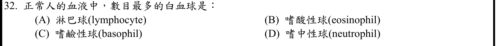
本地原卷PDF4 · 官方混科卷PDF22 · 官方原答案PDF1最下方生物表 · 已核對同年生物釋疑PDF28–29（未列本題）
官方採計：D 原答案：D
未列本輪取得的109年度釋疑PDF28–29；依同年答案採計，不宣稱沒有其他未取得公告
主分類：Ch42 Circulation and Gas Exchange
42.4 / Blood Composition and Function
目錄行2802；條目起始印刷頁934；實際目錄 PDF46
主分類理由：42.4 / Blood Composition and Function：白血球類別與血液成分功能為直接題目範圍。
次分類理由：無另列最小次條目；題問周邊血分類計數而非抗原反應，42.4血液成分直接；S32補足成人嗜中性球比例，保留年齡差異。
科學說明：D。一般成人周邊血嗜中性球比例最高，公開組織學教材約50–70%。Campbell列白血球類型，細分類比例由補充教材支持；兒童年齡差異及疾病變動不可混入題設「正常人」的通常成人判讀。
來源涵蓋範圍：Campbell提供列示分類原理；未直接涵蓋的細節由具名補充來源與同年釋疑支援，取得及實讀界線見來源紀錄。
教材正文：印刷934／PDF983、印刷935／PDF984、印刷936／PDF985
補充來源：S32
另行比較：白血球種類多寡是否應主分免疫章？
題問周邊血分類計數而非抗原反應，42.4血液成分直接；S32補足成人嗜中性球比例，保留年齡差異。
結論：證據確認，分類疑義已解決。完整覆核紀錄
Q33 · 42.2 / The Mammalian Heart: A Closer Look 正式分類
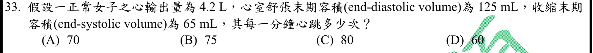
本地原卷PDF4 · 官方混科卷PDF22 · 官方原答案PDF1最下方生物表 · 已核對同年生物釋疑PDF28–29（未列本題）
官方採計：A 原答案：A
未列本輪取得的109年度釋疑PDF28–29；依同年答案採計，不宣稱沒有其他未取得公告
主分類：Ch42 Circulation and Gas Exchange
42.2 / The Mammalian Heart: A Closer Look
目錄行2773；條目起始印刷頁926；實際目錄 PDF46
主分類理由：42.2 / The Mammalian Heart: A Closer Look：以每搏量和心輸出量求心率，直接屬哺乳類心臟功能。
次分類理由：無另列最小次條目；另行重算SV60 mL，4200/60=70/min；採A並註明原文4.2 L缺/min，完整題文與原圖不增字。
科學說明：A。每搏量=125−65=60 mL；若心輸出量4.2 L/min，心率=4200/60=70次/min。原題只印4.2 L，缺每分鐘單位；依心輸出量的流量定義及問每分鐘心跳理解，原圖與原題文字不補字。
來源涵蓋範圍：Campbell正文支援分類原理；原題限定、同年釋疑細節與最小目錄邊界逐題保留。
教材正文：印刷926／PDF975、印刷927／PDF976、印刷928／PDF977
補充來源：本題未另列課本外來源
另行比較：原題心輸出量單位缺少每分鐘能否默改？
另行重算SV60 mL，4200/60=70/min；採A並註明原文4.2 L缺/min，完整題文與原圖不增字。
結論：證據確認，分類疑義已解決。完整覆核紀錄
Q34 · 42.2 / The Mammalian Heart: A Closer Look 正式分類
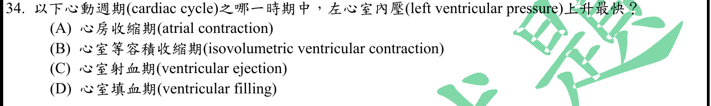
本地原卷PDF4 · 官方混科卷PDF22 · 官方原答案PDF1最下方生物表 · 已核對同年生物釋疑PDF28–29（未列本題）
官方採計：B 原答案：B
未列本輪取得的109年度釋疑PDF28–29；依同年答案採計，不宣稱沒有其他未取得公告
主分類：Ch42 Circulation and Gas Exchange
42.2 / The Mammalian Heart: A Closer Look
目錄行2773；條目起始印刷頁926；實際目錄 PDF46
主分類理由：42.2 / The Mammalian Heart: A Closer Look：心室週期各階段的壓力變化是心臟運作條目的直接考點。
次分類理由：無另列最小次條目；比較dP/dt與壓力峰值，作者教材指等容收縮達最大上升率；B，無需將射血較高壓力錯當變化率。
科學說明：B。等容收縮期間四瓣關閉、心室壓快速上升；最大dP/dt是壓力上升速率，不是射血期較高的壓力峰值。Campbell支援週期框架，作者生理教材直接支持最大上升率所在階段。
來源涵蓋範圍：Campbell提供列示分類原理；未直接涵蓋的細節由具名補充來源與同年釋疑支援，取得及實讀界線見來源紀錄。
教材正文：印刷926／PDF975、印刷927／PDF976、印刷928／PDF977
補充來源：S34
另行比較：壓力最高與上升最快是否相同？
比較dP/dt與壓力峰值，作者教材指等容收縮達最大上升率；B，無需將射血較高壓力錯當變化率。
結論：證據確認，分類疑義已解決。完整覆核紀錄
Q35 · 42.4 / Blood Composition and Function 正式分類
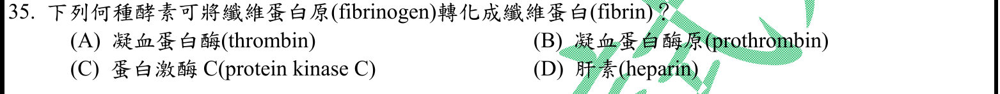
本地原卷PDF4 · 官方混科卷PDF22 · 官方原答案PDF1最下方生物表 · 已核對同年生物釋疑PDF28–29（未列本題）
官方採計：A 原答案：A
未列本輪取得的109年度釋疑PDF28–29；依同年答案採計，不宣稱沒有其他未取得公告
主分類：Ch42 Circulation and Gas Exchange
42.4 / Blood Composition and Function
目錄行2802；條目起始印刷頁934；實際目錄 PDF46
主分類理由：42.4 / Blood Composition and Function：凝血蛋白由血液成分功能下的凝血過程說明。
次分類理由：無另列最小次條目；印刷936–937凝血箭頭顯示thrombin作用於fibrinogen，A；不把前驅物或抗凝物當催化酵素。
科學說明：A。Thrombin催化fibrinogen轉為fibrin；prothrombin是前驅物，肝素為抗凝而非此轉換酵素。
來源涵蓋範圍：Campbell正文支援分類原理；原題限定、同年釋疑細節與最小目錄邊界逐題保留。
教材正文：印刷935／PDF984、印刷936／PDF985、印刷937／PDF986
補充來源：本題未另列課本外來源
另行比較：thrombin與prothrombin是否易混？
印刷936–937凝血箭頭顯示thrombin作用於fibrinogen，A；不把前驅物或抗凝物當催化酵素。
結論：證據確認，分類疑義已解決。完整覆核紀錄
Q36 · 42.7 / Respiratory Pigments 正式分類
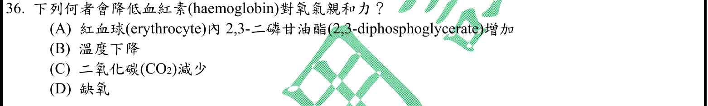
本地原卷PDF4 · 官方混科卷PDF22 · 官方原答案PDF1最下方生物表 · 同年釋疑PDF29
官方採計：A 原答案：A
109年度7/1審議會議釋疑維持原答案A
主分類：Ch42 Circulation and Gas Exchange
42.7 / Respiratory Pigments
目錄行2853；條目起始印刷頁947；實際目錄 PDF46
主分類理由：42.7 / Respiratory Pigments：影響血紅素氧解離與親和力的因素屬呼吸色素。
次分類理由：無另列最小次條目；官方109釋疑PDF29維持A；固定PO2比較解離曲線，區分DPG改親和力與低PO2改飽和度，也保留慢性缺氧可間接改DPG。
科學說明：A。2,3-DPG增加使血紅素較不易結氧，官方PDF29引用Vander15e印刷468維持A。單純低PO2降低飽和度不等於在相同PO2下親和力下降；慢性缺氧可間接提高DPG，須區分即時自變項及適應。原題二磷甘油酯用詞照存，現亦稱2,3-BPG。
來源涵蓋範圍：Campbell正文支援分類原理；原題限定、同年釋疑細節與最小目錄邊界逐題保留。
教材正文：印刷947／PDF996、印刷948／PDF997、印刷949／PDF998
補充來源：本題未另列課本外來源
另行比較：缺氧降低飽和度是否等於降低親和力？
官方109釋疑PDF29維持A；固定PO2比較解離曲線，區分DPG改親和力與低PO2改飽和度，也保留慢性缺氧可間接改DPG。
結論：證據確認，分類疑義已解決。完整覆核紀錄
Q37 · 42.6 / Control of Breathing in Humans 正式分類
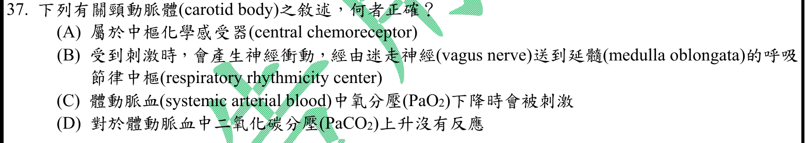
本地原卷PDF4 · 官方混科卷PDF22 · 官方原答案PDF1最下方生物表 · 已核對同年生物釋疑PDF28–29（未列本題）
官方採計：C 原答案：C
未列本輪取得的109年度釋疑PDF28–29；依同年答案採計，不宣稱沒有其他未取得公告
主分類：Ch42 Circulation and Gas Exchange
42.6 / Control of Breathing in Humans
目錄行2843；條目起始印刷頁946；實際目錄 PDF46
主分類理由：42.6 / Control of Breathing in Humans：頸動脈體偵測動脈氣體以調整通氣，是呼吸控制的周邊化學回饋。
次分類理由：無另列最小次條目；Campbell周邊呼吸回饋加S37舌咽神經分支確認C；B的迷走屬主要主動脈體路徑，不能套到頸動脈體。
科學說明：C。低PaO2刺激頸動脈體，亦可反應CO2與H+。頸動脈體傳入主要經舌咽神經而非B的迷走神經；主動脈體才主要走迷走。頸動脈竇壓力受器與頸動脈體化學受器不混同。
來源涵蓋範圍：Campbell提供列示分類原理；未直接涵蓋的細節由具名補充來源與同年釋疑支援，取得及實讀界線見來源紀錄。
教材正文：印刷945／PDF994、印刷946／PDF995、印刷947／PDF996
補充來源：S37
另行比較：頸動脈體與頸動脈竇、主動脈體是否混用？
Campbell周邊呼吸回饋加S37舌咽神經分支確認C；B的迷走屬主要主動脈體路徑，不能套到頸動脈體。
結論：證據確認，分類疑義已解決。完整覆核紀錄
Q38 · 41.3 / Digestion in the Small Intestine 正式分類
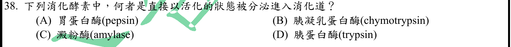
本地原卷PDF4 · 官方混科卷PDF22 · 官方原答案PDF1最下方生物表 · 已核對同年生物釋疑PDF28–29（未列本題）
官方採計：C 原答案：C
未列本輪取得的109年度釋疑PDF28–29；依同年答案採計，不宣稱沒有其他未取得公告
主分類：Ch41 Animal Nutrition
41.3 / Digestion in the Small Intestine
目錄行2714；條目起始印刷頁908；實際目錄 PDF46
次分類：Ch41 Animal Nutrition
41.3 / Digestion in the Stomach
目錄行2711；條目起始印刷頁907；實際目錄 PDF46
主分類理由：41.3 / Digestion in the Small Intestine：胰臟酵素分泌至小腸時的活化狀態是主要比较。
次分類理由：41.3 / Digestion in the Stomach：胃以pepsinogen分泌再活化，補足A選項的跨部位比較。
科學說明：C。澱粉酶可直接以活性形式分泌；pepsin、trypsin及chymotrypsin通常先以相應酵素原分泌以避免自我消化。選項列活化酵素名稱，不代表它們的分泌型也是活化型。
來源涵蓋範圍：Campbell正文支援分類原理；原題限定、同年釋疑細節與最小目錄邊界逐題保留。
教材正文：印刷907／PDF956、印刷908／PDF957、印刷909／PDF958
補充來源：本題未另列課本外來源
另行比較：選項酵素名稱是否代表其分泌時形式？
以實際分泌型amylase對照pepsinogen、trypsinogen、chymotrypsinogen，C；小腸及胃消化兩個同章小目完整保存。
結論：證據確認，分類疑義已解決。完整覆核紀錄
Q39 · 49.5 / The Brain’s Reward System and Drug Addiction 正式分類
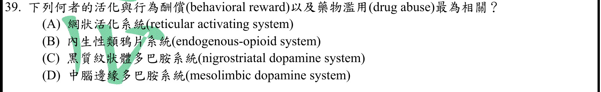
本地原卷PDF4 · 官方混科卷PDF22 · 官方原答案PDF1最下方生物表 · 已核對同年生物釋疑PDF28–29（未列本題）
官方採計：D 原答案：D
未列本輪取得的109年度釋疑PDF28–29；依同年答案採計，不宣稱沒有其他未取得公告
主分類：Ch49 Nervous Systems
49.5 / The Brain’s Reward System and Drug Addiction
目錄行3309；條目起始印刷頁1103；實際目錄 PDF48
主分類理由：49.5 / The Brain’s Reward System and Drug Addiction：中腦多巴胺獎賞迴路及成癮，直接有腦獎賞系統最小條目。
次分類理由：無另列最小次條目；題目要求獎賞與濫藥特定迴路，49.5明列Brain’s Reward System，較總論精確，D而非黑質紋狀體。
科學說明：D。腹側被蓋區投射到伏隔核等邊緣區的多巴胺迴路與獎賞／濫藥相關。黑質紋狀體主要關聯動作調控；其他選項可能參與行為，但不是此題最直接路徑。
來源涵蓋範圍：Campbell正文支援分類原理；原題限定、同年釋疑細節與最小目錄邊界逐題保留。
教材正文：印刷1103／PDF1152、印刷1104／PDF1153
補充來源：本題未另列課本外來源
另行比較：多巴胺是否應只分神經傳遞物質總覽？
題目要求獎賞與濫藥特定迴路，49.5明列Brain’s Reward System，較總論精確，D而非黑質紋狀體。
結論：證據確認，分類疑義已解決。完整覆核紀錄
Q40 · 41.5 / Regulation of Energy Storage 正式分類
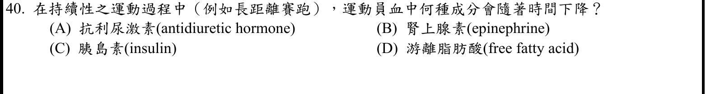
本地原卷PDF4 · 官方混科卷PDF22 · 官方原答案PDF1最下方生物表 · 已核對同年生物釋疑PDF28–29（未列本題）
官方採計：C 原答案：C
未列本輪取得的109年度釋疑PDF28–29；依同年答案採計，不宣稱沒有其他未取得公告
主分類：Ch41 Animal Nutrition
41.5 / Regulation of Energy Storage
目錄行2743；條目起始印刷頁915；實際目錄 PDF46
次分類：Ch45 Hormones and the Endocrine System
45.3 / Adrenal Hormones: Response to Stress
目錄行3039；條目起始印刷頁1012；實際目錄 PDF47
主分類理由：41.5 / Regulation of Energy Storage：長時間運動調整燃料動員，胰島素下降屬能量儲存的調節。
次分類理由：45.3 / Adrenal Hormones: Response to Stress：腎上腺素促進燃料動員提供持續運動的荷爾蒙背景。
科學說明：C。持續運動時交感及腎上腺素性作用可抑制胰島素分泌，肌肉仍可因收縮增加葡萄糖攝取；脂肪酸可供能。此為典型持續運動條件，不混同訓練後靜息或任意進食／補糖情境。
來源涵蓋範圍：Campbell提供列示分類原理；未直接涵蓋的細節由具名補充來源與同年釋疑支援，取得及實讀界線見來源紀錄。
教材正文：印刷915／PDF964、印刷916／PDF965、印刷1012／PDF1061、印刷1013／PDF1062
補充來源：S40
另行比較：持續運動與訓練後靜息是否混同？
原題是長距離賽跑當下，S40運動內分泌段支持insulin下降；能量調節主目、腎上腺壓力反應次目分別承接C及背景。
結論：證據確認，分類疑義已解決。完整覆核紀錄
Q41 · 49.2 / The vertebrate brain is regionally specialized 正式分類
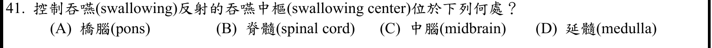
本地原卷PDF5 · 官方混科卷PDF23 · 官方原答案PDF1最下方生物表 · 已核對同年生物釋疑PDF28–29（未列本題）
官方採計：D 原答案：D
未列本輪取得的109年度釋疑PDF28–29；依同年答案採計，不宣稱沒有其他未取得公告
主分類：Ch49 Nervous Systems
49.2 / The vertebrate brain is regionally specialized
目錄行3251；條目起始印刷頁1091；實際目錄 PDF48
次分類：Ch41 Animal Nutrition
41.3 / The Oral Cavity, Pharynx, and Esophagus
目錄行2708；條目起始印刷頁905；實際目錄 PDF46
主分類理由：49.2 / The vertebrate brain is regionally specialized：定位延髓需腦區特化；正文腦幹敘述在49.2首個小目之前，目錄未另列Brainstem。
次分類理由：41.3 / The Oral Cavity, Pharynx, and Esophagus：吞嚥的咽與食道過程提供反射功能背景。
科學說明：D。Campbell印刷1093的延髓功能包含吞嚥。橋腦可參與相關網絡，但題目問典型吞嚥中樞定位。最小目錄採Concept 49.2，不虛構正文圖說為目錄小目。
來源涵蓋範圍：Campbell正文支援分類原理；原題限定、同年釋疑細節與最小目錄邊界逐題保留。
教材正文：印刷906／PDF955、印刷1091／PDF1140、印刷1092／PDF1141、印刷1093／PDF1142
補充來源：本題未另列課本外來源
另行比較：吞嚥功能能否誤分Arousal and Sleep？
PDF目錄48首個49.2小目為1094覺醒，吞嚥延髓圖在1093故屬Concept開頭；採49.2本身與口腔咽食道次目，D。
結論：證據確認，分類疑義已解決。完整覆核紀錄
Q42 · 42.4 / Cardiovascular Disease 正式分類
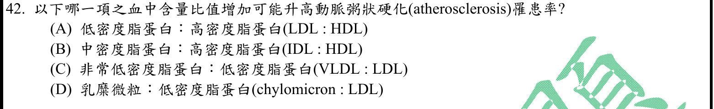
本地原卷PDF5 · 官方混科卷PDF23 · 官方原答案PDF1最下方生物表 · 已核對同年生物釋疑PDF28–29（未列本題）
官方採計：A 原答案：A
未列本輪取得的109年度釋疑PDF28–29；依同年答案採計，不宣稱沒有其他未取得公告
主分類：Ch42 Circulation and Gas Exchange
42.4 / Cardiovascular Disease
目錄行2805；條目起始印刷頁937；實際目錄 PDF46
主分類理由：42.4 / Cardiovascular Disease：LDL與HDL相對含量的動脈粥狀硬化風險，直接屬心血管疾病。
次分類理由：無另列最小次條目；教材心血管疾病段支持A為可能風險上升；不把關聯寫成個人診斷或HDL的無條件因果保護。
科學說明：A。LDL相對HDL增加是教材列出的風險關係；是群體風險指標，非單一比值足以診斷，亦不把HDL一律視為因果性保護保證。
來源涵蓋範圍：Campbell正文支援分類原理；原題限定、同年釋疑細節與最小目錄邊界逐題保留。
教材正文：印刷937／PDF986、印刷938／PDF987、印刷939／PDF988
補充來源：本題未另列課本外來源
另行比較：LDL:HDL是診斷還是風險？
教材心血管疾病段支持A為可能風險上升；不把關聯寫成個人診斷或HDL的無條件因果保護。
結論：證據確認，分類疑義已解決。完整覆核紀錄
Q43 · 50.5 / Vertebrate Skeletal Muscle 正式分類
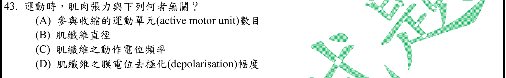
本地原卷PDF5 · 官方混科卷PDF23 · 官方原答案PDF1最下方生物表 · 已核對同年生物釋疑PDF28–29（未列本題）
官方採計：D 原答案：D
未列本輪取得的109年度釋疑PDF28–29；依同年答案採計，不宣稱沒有其他未取得公告
主分類：Ch50 Sensory and Motor Mechanisms
50.5 / Vertebrate Skeletal Muscle
目錄行3381；條目起始印刷頁1126；實際目錄 PDF49
次分類：Ch48 Neurons, Synapses, and Signaling
48.3 / Graded Potentials and Action Potentials
目錄行3206；條目起始印刷頁1073；實際目錄 PDF48
主分類理由：50.5 / Vertebrate Skeletal Muscle：張力由肌纖維大小、運動單元招募及刺激頻率調節，主屬骨骼肌。
次分類理由：48.3 / Graded Potentials and Action Potentials：動作電位全有全無特性解釋D不是一般張力編碼方式。
科學說明：D。正常生理條件下，單一肌纖維動作電位幅度近全有全無，張力以頻率、招募及纖維大小調節。不可擴張為任何病理性膜電位或離子改變都不影響收縮。
來源涵蓋範圍：Campbell正文支援分類原理；原題限定、同年釋疑細節與最小目錄邊界逐題保留。
教材正文：印刷1073／PDF1122、印刷1128／PDF1177、印刷1129／PDF1178、印刷1130／PDF1179、印刷1131／PDF1180
補充來源：本題未另列課本外來源
另行比較：去極化幅度與頻率是否混為一談？
比較正常動作電位全有全無與運動單元／頻率調張力，D；保留病理性膜改變例外，主骨骼肌、次48.3動作電位。
結論：證據確認，分類疑義已解決。完整覆核紀錄
Q44 · 16.2 / Replicating the Ends of DNA Molecules 正式分類
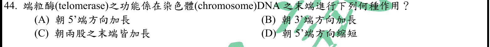
本地原卷PDF5 · 官方混科卷PDF23 · 官方原答案PDF1最下方生物表 · 同年釋疑PDF29
官方採計：B 原答案：B
109年度7/1審議會議釋疑維持原答案B
主分類：Ch16 The Molecular Basis of Inheritance
16.2 / Replicating the Ends of DNA Molecules
目錄行1019；條目起始印刷頁328；實際目錄 PDF39
主分類理由：16.2 / Replicating the Ends of DNA Molecules：端粒酶解決線性染色體末端複製問題，直接有末端複製條目。
次分類理由：無另列最小次條目；教材末端圖與官方PDF29均為加在既有DNA3′端、合成5′→3′；B，另一股補齊不是端粒酶直接雙股延伸。
科學說明：B。端粒酶以自身RNA為模板，向既有DNA的3′端加核苷酸，合成方向仍為5′→3′；互補股由其他複製酵素補上，不是端粒酶直接同時延長兩股。官方PDF29所引Weaver3e印刷735維持B，引用頁限公告內內容。
來源涵蓋範圍：Campbell正文支援分類原理；原題限定、同年釋疑細節與最小目錄邊界逐題保留。
教材正文：印刷328／PDF377、印刷329／PDF378
補充來源：本題未另列課本外來源
另行比較：朝3′端加長是否表示合成方向3′→5′？
教材末端圖與官方PDF29均為加在既有DNA3′端、合成5′→3′；B，另一股補齊不是端粒酶直接雙股延伸。
結論：證據確認，分類疑義已解決。完整覆核紀錄
Q45 · 42.1 / Organization of Vertebrate Circulatory Systems 正式分類
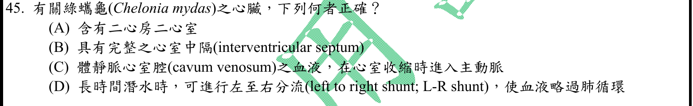
本地原卷PDF5 · 官方混科卷PDF23 · 官方原答案PDF1最下方生物表 · 已核對同年生物釋疑PDF28–29（未列本題）
官方採計：C 原答案：C
未列本輪取得的109年度釋疑PDF28–29；依同年答案採計，不宣稱沒有其他未取得公告
主分類：Ch42 Circulation and Gas Exchange
42.1 / Organization of Vertebrate Circulatory Systems
目錄行2763；條目起始印刷頁924；實際目錄 PDF46
主分類理由：42.1 / Organization of Vertebrate Circulatory Systems：龜類心室分隔及肺／體循環分流直接屬脊椎動物循環系統比較。
次分類理由：無另列最小次條目；重新開Q45原圖，對照Campbell龜類及原作者腔室圖：體動脈出口連CV，肺旁路為R-L，C正確。研究物種不同與NOAA取得失敗明示，未用其冒充綠蠵龜直接量測。
科學說明：C。龜類有兩心房及未完全隔開的心室；體動脈流出途徑由cavum venosum通向主動脈，略過肺為右至左分流，非D的左至右。cavum venosum名稱不代表其中永遠僅有缺氧血。Campbell圖文支援龜類框架；1976原研究對象為Pseudemys與Testudo，支持一般龜類腔室機制，不冒稱綠蠵龜直接實驗。NOAA海龜PDF取得失敗，未作已讀證據。
來源涵蓋範圍：Campbell提供列示分類原理；未直接涵蓋的細節由具名補充來源與同年釋疑支援，取得及實讀界線見來源紀錄。
教材正文：印刷924／PDF973、印刷925／PDF974、印刷926／PDF975
補充來源：S45
另行比較：cavum venosum是否必只通肺，L-R能否繞肺？
重新開Q45原圖，對照Campbell龜類及原作者腔室圖：體動脈出口連CV，肺旁路為R-L，C正確。研究物種不同與NOAA取得失敗明示，未用其冒充綠蠵龜直接量測。
結論：證據確認，分類疑義已解決。完整覆核紀錄
Q46 · 41.4 / Mutualistic Adaptations 正式分類
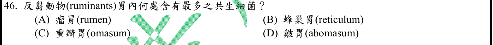
本地原卷PDF5 · 官方混科卷PDF23 · 官方原答案PDF1最下方生物表 · 同年釋疑PDF29
官方採計：A 原答案：A
109年度7/1審議會議釋疑維持原答案A
主分類：Ch41 Animal Nutrition
41.4 / Mutualistic Adaptations
目錄行2733；條目起始印刷頁912；實際目錄 PDF46
主分類理由：41.4 / Mutualistic Adaptations：反芻胃內微生物協助植物食物消化，直接屬互利適應。
次分類理由：無另列最小次條目；題問共生消化的胃室位置，41.4互利適應直接；官方PDF29以主要發酵及最大胃室維持A，未推論其他胃室完全無菌。
科學說明：A。瘤胃是主要共生發酵場所，官方PDF29引用Sherwood2e印刷655，稱容量最大且為纖維消化主場所，維持A。不是其他胃室沒有細菌，也不將「最多」偷換成經測量各部位每毫升密度；引用書頁僅讀公告圖文。
來源涵蓋範圍：Campbell正文支援分類原理；原題限定、同年釋疑細節與最小目錄邊界逐題保留。
教材正文：印刷912／PDF961、印刷913／PDF962、印刷914／PDF963
補充來源：本題未另列課本外來源
另行比較：是否應以細菌分類章處理瘤胃菌？
題問共生消化的胃室位置，41.4互利適應直接；官方PDF29以主要發酵及最大胃室維持A，未推論其他胃室完全無菌。
結論：證據確認，分類疑義已解決。完整覆核紀錄
Q47 · 42.4 / Cardiovascular Disease 正式分類
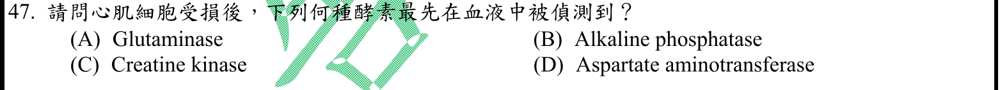
本地原卷PDF5 · 官方混科卷PDF23 · 官方原答案PDF1最下方生物表 · 已核對同年生物釋疑PDF28–29（未列本題）
官方採計：C 原答案：C
未列本輪取得的109年度釋疑PDF28–29；依同年答案採計，不宣稱沒有其他未取得公告
主分類：Ch42 Circulation and Gas Exchange
42.4 / Cardiovascular Disease
目錄行2805；條目起始印刷頁937；實際目錄 PDF46
主分類理由：42.4 / Cardiovascular Disease：心肌受損釋出酵素的病理情境對應心血管疾病；Campbell未細列標記時間。
次分類理由：無另列最小次條目；S47歷史教材指受損後早期升高而非正常零值，C；按四個酵素判讀，不宣稱CK是所有標記中最早或現行唯一診斷指標。
科學說明：C。依原題四種酵素，CK是心肌受損後早期上升的典型指標，補充教材列約3–6小時。CK原本就可在血中測得，應理解為受損後增高，不是首次從無到有；總CK非心肌專一，CK-MB也不等同總CK，不主張其為所有現行生物標記中最早。
來源涵蓋範圍：Campbell提供列示分類原理；未直接涵蓋的細節由具名補充來源與同年釋疑支援，取得及實讀界線見來源紀錄。
教材正文：印刷937／PDF986、印刷938／PDF987
補充來源：S47
另行比較：最先偵測是否意味正常血沒有CK？
S47歷史教材指受損後早期升高而非正常零值，C；按四個酵素判讀，不宣稱CK是所有標記中最早或現行唯一診斷指標。
結論：證據確認，分類疑義已解決。完整覆核紀錄
Q48 · 44.4 / The nephron is organized for stepwise processing of blood filtrate 正式分類
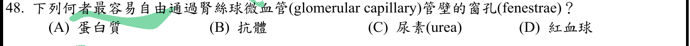
本地原卷PDF5 · 官方混科卷PDF23 · 官方原答案PDF1最下方生物表 · 已核對同年生物釋疑PDF28–29（未列本題）
官方採計：C 原答案：C
未列本輪取得的109年度釋疑PDF28–29；依同年答案採計，不宣稱沒有其他未取得公告
主分類：Ch44 Osmoregulation and Excretion
44.4 / The nephron is organized for stepwise processing of blood filtrate
目錄行2970；條目起始印刷頁987；實際目錄 PDF47
主分類理由：44.4 / The nephron is organized for stepwise processing of blood filtrate：大小選擇性濾過在Concept 44.4印刷987開头、From Blood Filtrate to Urine之前，故以該Concept為最小真實目錄。
次分類理由：無另列最小次條目；重開原圖及完整印刷987，濾過選擇性在44.4引言、From Blood Filtrate to Urine之前，主目修為44.4。尿素C最易過濾，保留全屏障多層結構限制。
科學說明：C。尿素分子小，可自由濾過；紅血球及多數大分子蛋白被完整濾過屏障限制。題幹只寫內皮窗孔較簡化，實際屏障還有基底膜及足細胞裂隙；不把單一窗孔說成全部選擇性的唯一來源。
來源涵蓋範圍：Campbell正文支援分類原理；原題限定、同年釋疑細節與最小目錄邊界逐題保留。
教材正文：印刷984／PDF1033、印刷985／PDF1034、印刷986／PDF1035、印刷987／PDF1036
補充來源：本題未另列課本外來源
另行比較：窗孔濾過是否可放腎小管後續处理小目？
重開原圖及完整印刷987，濾過選擇性在44.4引言、From Blood Filtrate to Urine之前，主目修為44.4。尿素C最易過濾，保留全屏障多層結構限制。
結論：證據確認，分類疑義已解決。完整覆核紀錄
Q49 · 44.5 / Homeostatic Regulation of the Kidney 正式分類
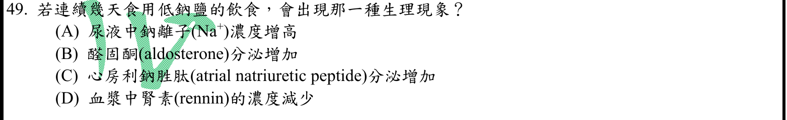
本地原卷PDF5 · 官方混科卷PDF23 · 官方原答案PDF1最下方生物表 · 已核對同年生物釋疑PDF28–29（未列本題）
官方採計：B 原答案：B
未列本輪取得的109年度釋疑PDF28–29；依同年答案採計，不宣稱沒有其他未取得公告
主分類：Ch44 Osmoregulation and Excretion
44.5 / Homeostatic Regulation of the Kidney
目錄行2987；條目起始印刷頁994；實際目錄 PDF47
主分類理由：44.5 / Homeostatic Regulation of the Kidney：低鈉經RAAS與醛固酮保鈉屬腎臟恆定調節。
次分類理由：無另列最小次條目；低鈉典型RAAS保鈉反應為B；濃度還受尿量影響，腎素應拼renin，兩項差異都保留，分類仍為腎臟恆定調節。
科學說明：B。典型低鈉攝入刺激保鈉反應，使醛固酮增加、腎鈉重吸收增加。尿鈉排出量與濃度須區分，濃度亦受水量影響。原題腎素英文rennin應為renin，rennin另指凝乳酶用語；原題照存。
來源涵蓋範圍：Campbell正文支援分類原理；原題限定、同年釋疑細節與最小目錄邊界逐題保留。
教材正文：印刷994／PDF1043、印刷995／PDF1044、印刷996／PDF1045
補充來源：本題未另列課本外來源
另行比較：尿鈉濃度、排出量與rennin字樣是否正確？
低鈉典型RAAS保鈉反應為B；濃度還受尿量影響，腎素應拼renin，兩項差異都保留，分類仍為腎臟恆定調節。
結論：證據確認，分類疑義已解決。完整覆核紀錄
Q50 · 10.5 / Photorespiration: An Evolutionary Relic? 正式分類
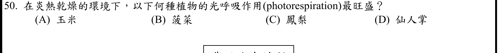
本地原卷PDF5 · 官方混科卷PDF23 · 官方原答案PDF1最下方生物表 · 已核對同年生物釋疑PDF28–29（未列本題）
官方採計：B 原答案：B
未列本輪取得的109年度釋疑PDF28–29；依同年答案採計，不宣稱沒有其他未取得公告
主分類：Ch10 Photosynthesis
10.5 / Photorespiration: An Evolutionary Relic?
目錄行673；條目起始印刷頁203；實際目錄 PDF37
次分類：Ch10 Photosynthesis
10.5 / C4 Plants
目錄行676；條目起始印刷頁203；實際目錄 PDF37
次分類：Ch10 Photosynthesis
10.5 / CAM Plants
目錄行679；條目起始印刷頁205；實際目錄 PDF37
主分類理由：10.5 / Photorespiration: An Evolutionary Relic?：熱乾燥環境中C3植物Rubisco氧化反應增加，直接屬光呼吸。
次分類理由：10.5 / C4 Plants：玉米以C4空間分隔濃縮CO2；10.5 / CAM Plants：鳳梨和仙人掌的CAM時間分隔減少水分代價及光呼吸。
科學說明：B。菠菜是C3植物，關閉氣孔使葉內CO2低而相對O2高，較易光呼吸；玉米C4、鳳梨及仙人掌CAM具有濃縮／保存CO2策略。比較限題設典型條件，不說CAM或C4絕無光呼吸。
來源涵蓋範圍：Campbell正文支援分類原理；原題限定、同年釋疑細節與最小目錄邊界逐題保留。
教材正文：印刷203／PDF252、印刷204／PDF253、印刷205／PDF254
補充來源：本題未另列課本外來源
另行比較：CAM及C4是否可直接寫成零光呼吸？
比較菠菜C3、玉米C4、鳳梨／仙人掌CAM，熱乾燥下B較旺盛；三個10.5真實小目保留，章級每題仍只計一次。
結論：證據確認，分類疑義已解決。完整覆核紀錄
目前篩選沒有符合的題目；本年度總數仍為50題。
補充來源
查證日期：2026-09-09。使用原始研究摘要、官方資料與作者教材，不宣稱所有出版商全文已取得。詳細界線見來源紀錄。
- S07 Alberts et al. Molecular Biology of the Cell 4e: Studying Gene Expression and Function
兩隱性功能缺失突變在不同基因時通常互補恢復表型；同基因通常不互補。題設未寫適用條件，不能當所有突變的絕對規則。
實讀範圍：本輪網頁互補測試專節及基因功能導論；非全書
原始來源1 - S17 GeneReviews: Maple Syrup Urine Disease
疾病是支鏈胺基酸及其酮酸代謝障礙，涉及BCKD複合體；常染色體隱性。苯丙胺酸不是該病的主要障礙底物。
實讀範圍：網頁臨床摘要及遺傳諮詢段，未宣稱閱全章
原始來源1 - S19 Biochemistry, Cholesterol: HMG-CoA reductase
HMG-CoA還原成mevalonate是膽固醇生合成經典限速步驟；不把合成酶與還原酶混同。
實讀範圍：NCBI Bookshelf公開生化教材機制段，非原始實驗研究
原始來源1 - S20 IUBMB enzyme nomenclature EC1.13.11.5
Homogentisate 1,2-dioxygenase以氧參與開環反應，屬酪胺酸分解途徑；oxygenase不是一般用氧呼吸的泛稱。
實讀範圍：官方酵素命名頁反應式及與tyrosine metabolism相關書目
原始來源1 - S23 The pituitary gland, Endocrinology
下視丘多巴胺經門脈抑制泌乳激素；其減少會解除抑制。
實讀範圍：網頁Prolactin段；不同於官方所引Vander15e全書
原始來源1 - S24 Wolff 1988 author account of Wolff and Perry 1974 sister chromatid staining
BrdU差別染色讓姐妹染色分體交換形成深淺交替，可直接辨認SCE；不是非姐妹間的減數分裂交換。
實讀範圍：作者回顧PDF一頁正文及原論文可取得摘要；web開啟曾失敗，另以直接下載取得Nature HTML。未聲稱讀原論文完整付費全文。
原始來源1 · 原始來源2 - S25 Characterization of SARS-CoV-2 replication complex elongation and proofreading activity
原始生化研究辨認nsp10-nsp14校對功能，冠狀病毒是RNA病毒通常缺少校對的例外。
實讀範圍：本輪直接下載原作者完整HTML，實讀摘要及校對實驗聚焦段；web直接開啟失敗與後續成功下載分開記錄，未宣稱逐段讀完整篇。
原始來源1 - S26 Alberts et al. Transport from the Trans Golgi Network to Lysosomes; Cooper Endocytosis
胞吞囊泡先進內體，晚期內體可已開始水解並成熟為溶酶體；不能把所有降解起始強定在成熟溶酶體之後。
實讀範圍：前者Multiple Pathways及M6P段；後者早晚內體運輸段
原始來源1 · 原始來源2 - S28 Elsevier sample chapter ISBN9780723434290, chapter2 nervous system
鉀通道關閉較慢導致過極化，造成相對不反應期，需較強刺激；鈉通道失活是絕對不反應期的重要原因。
實讀範圍：出版社公開樣章PDF5相對不反應期段；不宣稱取得整本書
原始來源1 - S31 Richard E. Klabunde, Systemic Circulation
靜脈系統是主要容量血管，容納循環血量最多；這是存量，不是截面積或流速。
實讀範圍：作者教材Distribution of Pressures and Volumes及容量血管段
原始來源1 - S32 Histology, White Blood Cell
一般成人周邊血的嗜中性球約占白血球50–70%，為最多類型。
實讀範圍：NCBI Bookshelf公開組織學教材嗜中性球段；一般成人範圍
原始來源1 - S34 Richard E. Klabunde, Isovolumetric Contraction
等容收縮早期的壓力上升率達最大；壓力峰值本身與最大dP/dt不同。
實讀範圍：作者教材Phase2正文及圖說，頁面修訂2023-11-04
原始來源1 - S37 Neuroanatomy, Cranial Nerve 9 (Glossopharyngeal)
頸動脈體是周邊化學受器，傳入以舌咽神經頸動脈竇支為主要路徑；不把主路徑寫成迷走神經。
實讀範圍：NCBI Bookshelf公開神經解剖教材分支功能段
原始來源1 - S40 The Metabolic Responses to Stress and Physical Activity
運動時胰島素可因腎上腺素性抑制而下降，肌肉收縮仍可促進葡萄糖攝取；長時間運動與訓練後靜息不可混同。
實讀範圍：作者會議章節的運動內分泌及葡萄糖轉運段
原始來源1 - S45 Shelton and Burggren 1976 author archive; NOAA attempted source
龜類體動脈由cavum venosum流出，肺旁路為右至左。1976研究為Pseudemys及Testudo，非綠蠵龜直接實驗。NOAA海龜PDF未取得，不作已讀佐證。
實讀範圍：1976原作者存檔PDF1–2及5–6聚焦段與腔室圖說；NOAA下載失敗，沒有實讀頁面。
原始來源1 · 原始來源2 - S47 Clinical Methods: Creatine Kinase
心肌受損可釋出CK及CK-MB，文獻典型上升約3–6小時；CK不是心肌專一，也不是所有生物標記中最早。
實讀範圍：Basic Science的來源及時間段；歷史教材不作現行臨床診斷流程
原始來源1